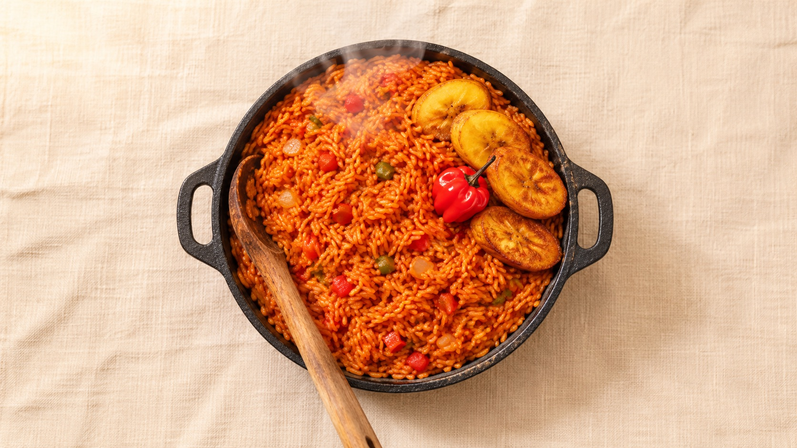
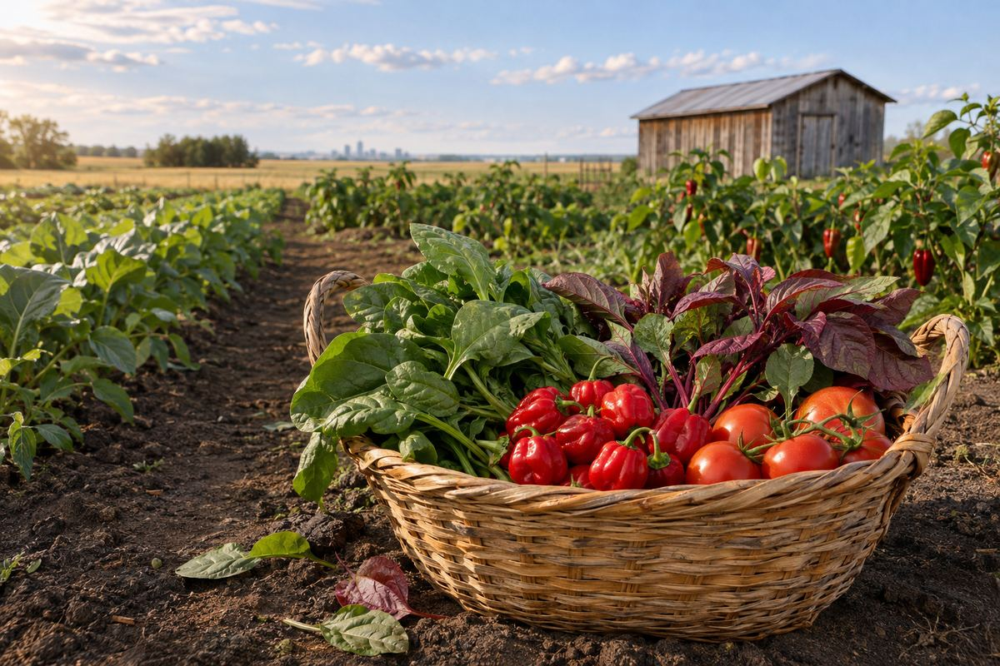

Dinner's on the
stove.
East African home cooking, made with greens from our own farm. Browse the menu, call or text us, and we'll have your plate hot and ready.
See house favouritesOrdering is a call or text away.
587-566-0074 Or text your orderPick a plate from the menu, call or text us your order and a pickup time, and it's packed hot when you arrive. No app, no account.
- Ready in
- About 20 minutes
- Pay
- Card or cash at pickup
- Parking
- Free, right out front
Our field, your plate.
The spinach, beans and peas on our menu come from the Gracefield farm, just outside Edmonton. In the kitchen we cook East African home food the way it's made at home: nyama choma off the grill, matoke, isombe and fresh chapati. Picked close, cooked fresh, made to share.
Draft story · confirm what the farm grows and raises, and where it is
Find the kitchen.
Order by phone
587-566-0074Address
Street address to confirm
Edmonton, Alberta
Hours
- Tue–Sun
- 11:00–21:00
- Mon
- Closed
Good to know.
Still wondering? Call 587-566-0074 and ask the kitchen.
Draft answers · confirm with GracefieldDo you deliver?
Not yet. Every order is pickup: call, give us a time, and it's packed hot when you arrive.
Where does your food come from?
Our leafy greens, beans and peas come from our own farm outside Edmonton; look for the "From our farm" tag on the menu. Plantain, cassava, rice and spices come from trusted African grocers.
Can I order ahead for later today?
Yes. Call or text any time we're open and tell us when you'd like to pick up. We'll start cooking so it's ready on the minute.
How spicy is the food?
Tell us how you like it when you order. We're happy to keep a plate mild or turn the heat up.
I have a food allergy. Can you help?
Tell us about any allergy when you order and we\'ll tell you what\'s safe. Our kitchen cooks with peanuts (in the isombe) and wheat (in the chapati, mandazi and sambusa).
Do you have vegan or vegetarian dishes?
Several of our vegetable plates and sides, like beans, spinach, garden peas, ugali and fried plantain, are made without meat. Ask when you order and we\'ll confirm how each one is cooked.
Do you cater events?
Yes. We cook for weddings, birthdays, office events and family gatherings. Call or text with your date and number of guests, ideally two weeks ahead for big events.